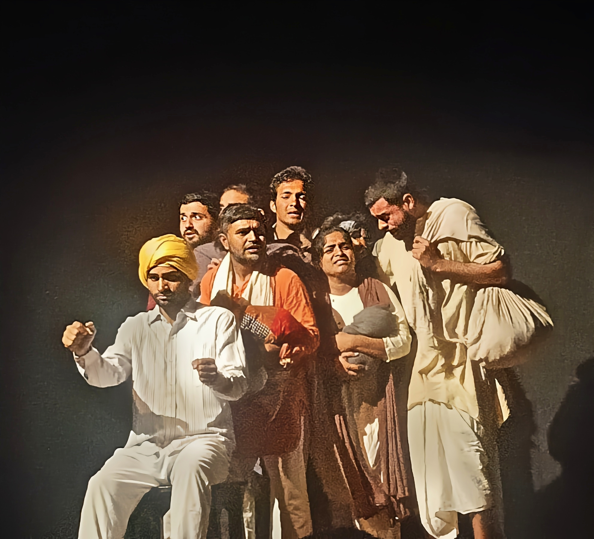
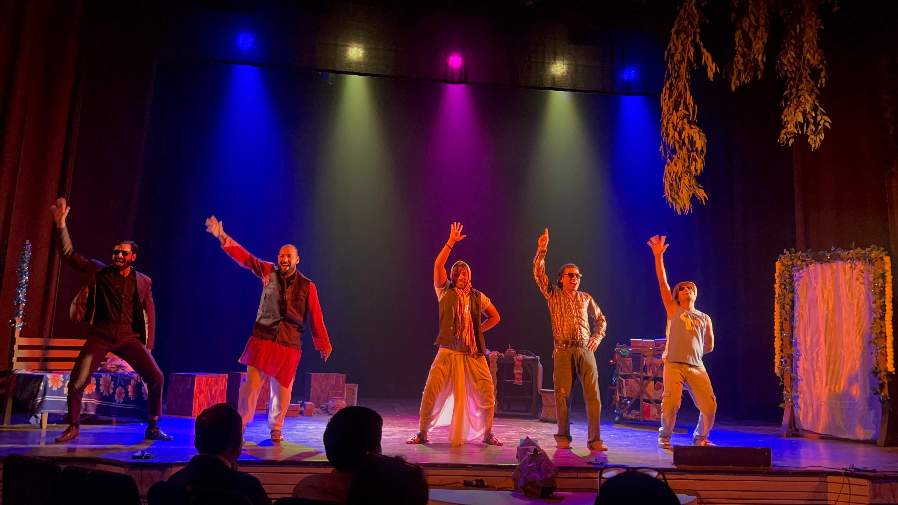
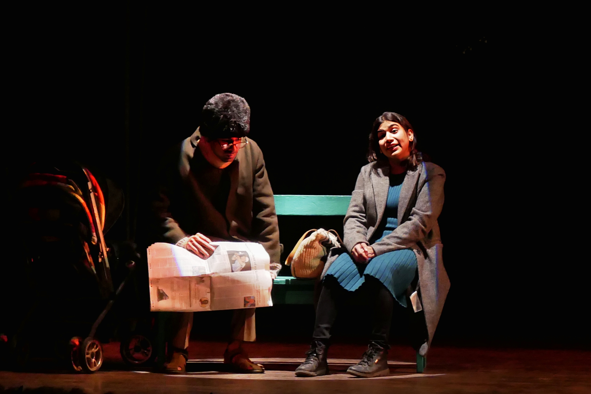

Roots in Heritage
India's performing arts trace back millennia — from Natya Shastra to folk traditions passed through generations. Vacika honours this lineage in every production.

Vacika is a creative trust and performing arts platform dedicated to showcasing India's finest classical music, dance, and theatrical productions. We preserve timeless traditions while building a national stage where culture, community, and commerce converge — giving artists a platform and the nation a voice.
India carries one of the world's richest performing arts traditions — yet thousands of artists lack the infrastructure, funding, and audience reach to sustain their craft. Vacika bridges that gap.
We are building a scalable platform that connects artists to communities, sponsors to productions, and investors to measurable cultural impact. From street plays in rural villages to grand theatrical productions in urban centres, Vacika gives every story a stage and every community a reason to gather.
Fair compensation, professional development, and nationwide visibility for performers.
Free and subsidised performances that bring the arts to underserved populations.
Documenting and reviving classical art forms before they fade from living memory.
A replicable model designed to grow across states, languages, and art forms.
From the rhythmic movements of classical dance to the raw power of street theatre, the arts offer a vast array of mediums for self-expression and social dialogue. Vacika curates and produces across every discipline — connecting India's creative diversity into a unified platform that inspires, educates, and transforms communities.

Real productions from Vacika's stage — classical heritage, contemporary drama, and social theatre across India.




 (1).JPG)

India's performing arts trace back millennia — from Natya Shastra to folk traditions passed through generations. Vacika honours this lineage in every production.
Over a decade of grassroots work — street plays, community workshops, and classical productions — has shaped Vacika into a trusted cultural institution.
With investor partnership, Vacika is poised to expand nationally — digitising reach, professionalising operations, and multiplying cultural impact across India.
Music conveys and evokes a wide range of emotions — from joy and sorrow to inspiration and contemplation.
Musical traditions serve as a vital link to India's cultural heritage and regional identity.
Music transcends language barriers, fostering shared experiences that resonate across the nation.
Theatre transports audiences into captivating narratives, allowing them to experience characters' journeys firsthand.
Writers, directors, actors, and technicians unite to create a unified artistic vision on stage.
From Partition narratives to women's empowerment, Vacika's theatre drives awareness and action.
Live performance inspires audiences, challenges perspectives, and catalyses community dialogue.
Dance conveys emotions, ideas, and narratives through the expressive language of the human body.
Classical and folk dance forms reflect India's diverse regional identities, customs, and histories.
A captivating dance performance can be profoundly moving for both performers and audiences alike.
Plays on women empowerment, corruption, road safety, and voter rights educate and inspire action.
Performing in open spaces makes complex issues accessible to diverse audiences nationwide.
Street theatre reaches villages and towns where conventional venues don't exist.
Post-performance discussions turn audiences into active participants in social change.
Powerful productions on women empowerment, corruption, LGBTQ rights, and social justice — performed where the nation gathers.
Preserving India's classical music, dance, and visual traditions through curated performances and educational outreach.
From historical epics to contemporary drama — productions that entertain, educate, and inspire audiences to act.
Street plays on topics like women empowerment, corruption, LGBTQ rights, road safety, voter rights, and drug prevention raise awareness and encourage positive societal change.
By performing in public spaces, these plays make complex issues accessible, engaging diverse audiences and inspiring them to reflect, discuss, and take action.
Theatre acts as a powerful medium to highlight key social concerns, motivating audiences to recognize their roles in fostering a fair and responsible society.
Through compelling storytelling and character-driven narratives, theatre inspires audiences to empathize with others' struggles and take meaningful steps toward change.
Vacika attracts talented performers, musicians, and directors to create unforgettable, investor-grade productions.
Deep roots in local communities through educational programs, workshops, and free public performances.
Committed to safeguarding India's classical art forms and documenting living traditions for future generations.
The Indian performing arts market is underserved and ripe for institutional investment. Vacika offers a proven track record, a passionate team, and a scalable model that turns cultural capital into measurable social and financial returns.
Whether you're a CSR leader, impact investor, or philanthropic foundation — Vacika provides the platform, the productions, and the proof of impact.
Schedule a Conversation150+ productions, 50+ communities, and a decade of grassroots cultural work across India.
Replicable framework for touring productions, digital content, and community partnerships.
Measurable social impact alongside brand visibility, CSR compliance, and cultural goodwill.
A platform designed to grow from regional roots to a pan-India cultural institution.
Identify artists, themes, and communities where cultural intervention creates the greatest impact.
Professional productions — from street plays to grand theatre — delivered with artistic excellence.
Tour nationally, digitise content, and partner with institutions to multiply reach and returns.
Your support helps us preserve traditions, nurture talent, and bring the arts to every community across the nation.
Tax-deductible contributions that fuel Vacika's mission of cultural enrichment and national impact.
Donate NowCSR-aligned sponsorships with measurable brand visibility and documented social outcomes.
Partner With UsReach out to discuss investment opportunities, corporate partnerships, volunteering, or attending our next performance.